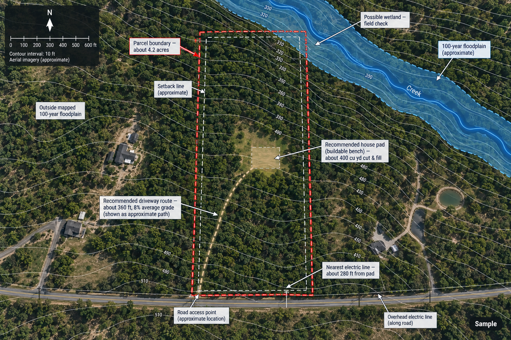

This is a workable lot, not a difficult one, but it is not a cheap one either. The range is wide because the biggest line item — septic — will not be settled until a perc test is done. If you are negotiating price, use the low end as your floor and the high end as your walk-away number: at $33,000 in site work this is an easy yes, at $72,000 you are effectively paying for a second driveway and an engineered septic system, and the deal should be priced accordingly. A well and any permit or impact fees are separate costs on top of this range, not included in it.
The one usable entrance sits near the front corner. From there the drive climbs about 360 ft to the bench at an average grade of roughly 8%, with one steeper pitch near 12%. It also crosses a small swale, which will need a culvert. That combination — length, grade, and a drainage crossing — is why this is real earthwork rather than a short flat driveway.
The bench itself is about 0.4 acres of gentler ground, wooded, with room for a house pad on the order of 60 ft by 80 ft. Leveling it is roughly balanced cut-and-fill — about 400 cubic yards moved, with the spoil staying on site rather than needing to be trucked away.
The soil survey rates the bench area “somewhat limited” for a conventional septic system — a moderate limitation, mostly from slope and a shallow depth to a restrictive layer. That is not a red flag by itself. A conventional trench system may still work; a perc test is what will tell you, and it can also push the design toward an engineered or alternative system if the ground doesn't drain the way the soil map suggests.
Overhead electric runs along the road. The nearest connection point to the pad is about 280 ft. Water is assumed to come from a private well, since there is no water line to tie into — the well itself is priced separately below, not folded into the site-work range.
The parcel sits outside the FEMA-mapped 100-year floodplain. The National Wetlands Inventory does show a possible forested wetland along the drainage in the far corner, about 150 ft from the pad at its closest. The building envelope itself is clear, but that wetland line is drawn from remote data and is worth confirming on the ground before you rely on it.
The itemized figures below are approximate and meant to bracket the job, not price it to the dollar.
| Item | What it covers | Estimate |
|---|---|---|
| Driveway | Clearing, rough grading, culvert, compacted gravel | $12,000–24,000 |
| Pad preparation | Clearing ~0.4 acre, ~400 cu yd cut-and-fill, rough grading | $7,000–15,000 |
| Septic system | Conventional trench if perc passes; upper end if engineered/alternative is required | $9,000–22,000 |
| Utility connection | Electric service, ~280 ft, trench or overhead extension, meter and hookup | $5,000–11,000 |
| Total estimated site work | $33,000–72,000 | |
Septic uncertainty. The $9,000–$22,000 range is the widest single swing in the estimate. A perc test is the one check that narrows it — everything else here is a smaller range for a reason.
The driveway. 360 ft at an 8% average grade, with a steeper stretch and a culvert crossing, is enough earthwork that a driveway bid can move the total more than people expect.
Pad earthwork and clearing. The bench is usable, but it is sloped and wooded, so leveling it is a real line item rather than an afterthought.
This report is a screening tool. It is built from public elevation and soil data, run through automated measurement and summarized in plain language by an AI. It is meant to tell you whether a lot is worth pursuing and roughly what to budget — not to be the final word on any of it.
It is not a licensed survey. Boundaries, acreage, and frontage here are approximate, not surveyed.
It is not a site or civil engineer's design for the driveway, pad, or drainage.
It is not a contractor's bid. The cost ranges are estimates for budgeting, not quotes you can hold anyone to.
It is not a perc test. The septic rating is a soil-survey estimate, not a field measurement of how the ground actually drains.
It is not an appraisal. Nothing here speaks to what the lot is worth, only what it may cost to prepare.
None of this is a reason to skip the usual checks before closing — it is a map of which ones matter most here.